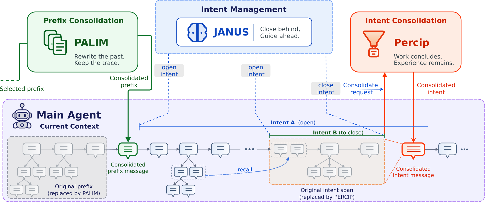
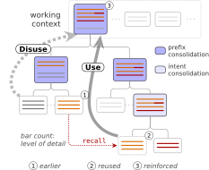

01研究背景与问题定义
持续工作的智能体需要兼顾两件事：保留当前任务所需的细节，并从过去的成败中积累可复用的知识。然而，随着交互历史增长，把全部记录留在上下文中会挤占窗口、增加推理干扰；若直接用一次性摘要替换历史，又可能丢掉当时不显重要、以后却需要核查的证据。因此，记忆管理既要决定眼下该保留什么，也要解决旧经验如何在新工作中接受检验和修订的问题。只有把保留、使用与反馈连接起来，历史记录才可能成为持续学习的材料。
核心创新：让工作上下文本身成为可演化的记忆
Hippocam 用嵌套的“意图”组织工作，让每段过程都对应一个带退出条件的目的，从而为保留内容和抽象粒度提供依据。当某个目的结束时，系统将相关过程整合为上层工作仍需的结果与证据；随着历史继续积累，较旧的整合结果又与新工作一起接受递归整合。被替换的原消息保存在整合消息下方，逐渐形成一棵可按需下钻的消息树，使当前上下文能够聚焦于正在推进的工作，同时为日后的证据核查保留入口。
| 要解决的问题 | 设计选择及作用 |
|---|---|
| 难判断过程结束后该留下什么 | 按意图及上层目的决定保留内容与粒度，保留后续所需状态。 |
| 历史需要变短，细节又可能再有用 | 递归抽象旧历史，保存原文子树，支持按需恢复证据。 |
| 旧教训需要随新反馈改变 | 让知识参与新工作，再把观察与成败反馈带入后续整合，补充或修订旧认识。 |
在这一结构上，论文用“用进废退”描述经验的演化：被再次使用的知识会与新的观察和成败反馈一起进入后续整合，因而有机会得到补充或修订；未被使用的经历则在活跃上下文中逐渐以更概括的形式出现。这里的学习依赖经验的再使用及其反馈，模型权重并不更新，底层原记录也不会因“废退”而删除。持续变化的是代理眼前的知识表示，以及这些知识参与后续工作的方式。
02方法与技术路线
Hippocam 改动的是代理每轮推理时读到的工作历史。代理仍然通过“思考、调用工具、观察结果”完成任务，但已经结束的工作不再一直以完整过程占据输入，而会被整理成能支持后续工作的记忆；原过程保存在这些记忆下方，需要时再取回。论文把这种整理称为整合：它既要缩短眼前的文本，也要保留结果、证据和来源，使代理能够接着做事。Janus、Precip、Palim 是三类辅助模型调用，分别判断工作目的、整理刚结束的工作、整理更早的历史；recall 则是主代理取回归档记录的工具。
原消息包括用户要求、代理响应和工具结果。归档中的原过程不会自动全部进入本轮输入。
读取当前历史与嵌套目的链 → 更新目的、标记已结束的片段，并给主代理指导。实际任务仍由主代理完成。
Precip：整理这一段工作
结合完整目的链，从结束片段中保留结论、状态、具体证据及外层工作仍需的材料，生成一条整合记忆。
Palim：再次整理较早历史
选取较旧的一段消息，将已有记忆与后来工作合并为更概括的叙事及可更新知识；节省空间不足时不提交替换。
当前输入：放入新记忆及归档引用
所选原片段被替换，其他消息仍在；后续推理直接使用整理后的文本。
原文归档：保存被替换的消息
它们按原顺序挂在新记忆下面，已有的归档层级也一起保留，逐渐形成消息树。
信息够用就继续任务；新工作带来的事实和成败反馈，再进入后续 Precip、Palim 整合，补充或修订已有知识。
整套机制区分了“眼前要读什么”与“过去还存着什么”：活跃上下文 C 是主代理本轮实际读到的文本，归档 A 保存已被移出这些文本的原记录，意图栈 I 则记录当前工作从外层目的到内层子目的的关系。Precip 与 Palim 根据不同条件触发，并非每轮依次执行的两道固定工序；它们生成的记忆会回到活跃上下文，继续参与主代理的正常推理。
展开论文原图｜意图控制、双重整合与消息树

Janus：先判断一段工作在解决什么，才能知道何时整理
判断哪些消息属于同一段工作，需要先知道这些动作共同服务于什么目的。Hippocam 因此为每个意图记录目的、成功或失败的退出条件，以及这段工作从哪条消息开始。若一个大目的要先解决更具体的问题，就把子目的放在父目的上方，先完成内层，再回到外层；这就是“意图栈”。它记录的是当前正在推进的目的链，读一份文件或调用一次工具通常只是手段，无须各自成为一个意图。
每轮推理前，Janus 都读取当前历史和目的链，用模型判断这段工作是否已经满足退出条件、接下来是否需要改变方向，并把判断写成主代理可读的指导。例如，“为有过敏限制的人点餐”尚未完成时，可以先建立“核对候选菜品配料”的子目的；查过一张菜单不等于完成核对，必须看已有证据是否足以支持结束条件。Janus 由此给后续整合提供工作边界，但不会替主代理完成配料判断或执行点餐。
| 判断 | 何时发生 | 目的链如何变化 |
|---|---|---|
| 继续 Continue | 当前目的仍适合接下来的工作 | 保持原来的链，继续推进。 |
| 深化 Deepen | 需要先解决一个有独立结束条件的子问题 | 在当前目的上方增加更具体的子目的。 |
| 关闭 Close | 已有证据支持成功或无法继续的退出条件 | 从最内层移除已经结束的目的，标记对应工作片段。 |
| 切换 Shift | 一段工作结束，需要转向下一方向 | 关闭结束的目的，再开启后继目的。 |
目的是否结束是模型的语义判断，框架只检查开闭操作是否符合栈的规则，并要求纠正无效操作。一次尝试失败可能需要增加恢复子目的，并不足以宣告整个目的结束；Janus 也只管理眼前能够确定的方向，不会提前展开完整任务计划，或把相互独立的并行任务写成父子关系。
Precip：一件事结束后，把过程换成后续还能用的记忆
Janus 标记意图结束后，Precip 读取这段工作及其完整目的链，生成能够独立理解的第一人称记忆。它要回答的是：这段工作已经建立了什么，以及外层工作还需要什么材料才能继续。因而，记忆中既要有已发生的状态变化和主代理明确得出的结论，也要有支撑结论的具体证据及来源；有信息量的失败需要留下，没有建立相关事实的探索枝节则可以去除。
完整目的链决定了保留范围。某份材料对刚结束的子目的可能已经用完，对尚未完成的父目的却仍有价值；如果只留下“已经看完菜单”，后续就无法直接比较价格或核查过敏限制。因此，Precip 的整合可能包含具体摘录，而不只是一段概述。尤其是主代理尚未分析、外层目的又可能需要的材料，应连同来源保留，整合模型不能擅自替主代理得出新结论。
这一步使主代理能够直接接着结果工作，而不必每轮重读全部探索过程。若多个嵌套目的同时结束，系统从内向外处理，以保持“子工作结果服务于父工作”的关系；每次替换也会更新后续意图的位置，并保持工具请求与返回完整配对。原始过程由框架归档，内容如何筛选则由 Precip 的模型调用完成。
Palim：当摘要也越积越多，再整理更早的一段历史
即使每个结束的意图都被整理成记忆，长期运行后，这些记忆仍会积累。Palim 处理的“前缀”，就是某个意图区间中靠前、距离当前工作较远的一段消息；其中可以同时包含原消息、Precip 生成的记忆，以及 Palim 之前生成的更早记忆。它把这些内容一起再次整合，所以递归整合指的是“旧整合结果还能参与下一次整合”，并不要求反复从最底层原文重新开始。
两类触发条件决定了何时调用 Palim。通常在一次意图整合提交后，框架检查所属区间，只有较旧部分的整合消息数和长度都达到门槛才继续整理；每轮开始时，如果预计输入和下一轮所需空间将使窗口承压，也会主动扫描较旧区间。系统一般先保护近期完整交互，只有释放空间后仍超限，才扩大整理范围；尚未完成的工具请求和返回始终受保护。候选结果还必须实际省下足够 token，节省不足就要求进一步精简，仍不合格则保留源片段；最终仍无空间时，在主代理推理前报告容量耗尽。
Palim 的另一项关键设计，是把“当时做过什么”与“已经建立了什么知识”分开。前者可以逐渐概括，后者需要保留足以识别对象的具体信息，否则反复整理就会把可执行的知识磨成模糊印象。
| 内容 | 表达什么 | 再次整合时如何处理 |
|---|---|---|
| 工作叙事 narrative | 代理做过哪些工作，取得了什么结果 | 叙事逐渐变粗，具体步骤可以并入较大的任务与结果。 |
| 事实与教训 knowledge | 关于对象的事实、条件、关系及有依据的经验 | 保留识别细节及关系，合并重复内容，允许新事实补充或修订旧知识。 |
这种区分解释了“历史更短”为什么不应等同于“所有内容越来越模糊”：论文附录提示明确要求已提取的知识保留识别细节，而让叙事逐层概括。知识附带的 good、bad、neutral 标签只标明经验结果的方向，不代表置信度或保留优先级。Palim 可以重组已有认识，却不能仅凭再次压缩就创造原工作尚未建立的新教训；上述内容要求也依赖模型执行提示，并非程序自动保证语义完整。
展开实现参考｜近期交互如何保护，候选结果如何验收
全局“工作尾部”是需要优先保留细节的近期消息，覆盖至少 K 轮完整交互和动态预算 B 所对应的 token。一次交互轮包括主代理响应及其工具结果，意图指导和整合消息本身不计入轮数；工具请求与返回必须完整配对，因此 token 边界可以适当超出预算。
W 是窗口容量；近期轮长的分位数用来估计 K 轮需要的空间，B_min 提供最低预算，αW 设置保护量的上限。
默认在预计请求及下一轮预留空间超过 0.80W 时启动压力扫描。普通扫描检查的消息数与长度门槛可在压力下跳过，但最小节省量仍为 8192 tokens；不足时最多再要求两次精简，仍不合格就不替换原片段。若外层关闭只比内层增加意图控制消息，系统还会合并这类关闭，避免对同一实质工作反复整理。
消息树与 recall：摘要不够用时，逐层取回它替换过的记录
每次整合都把被替换的消息挂在新记忆下面，旧记忆再次参与整合时，也会连同自己的下层记录一起保存，因而自然形成消息树。树的第一层就是当前可见的上下文，更早的具体过程藏在较深层；这里的层级表示“哪条记忆替换了哪些消息”，而非按话题额外建立的分类目录。主代理在整合文本中看到归档引用，就有了定位相应原过程的入口。
只返回 P 的直接下层：A 和 B。若这些内容已经足够，就停止恢复。
下一轮再请求 A 的下层，才能取回更早原消息；不会一次自动展开全部历史。
recall 按给定引用读取已有归档，返回内容作为普通工具结果进入后续输入，不会重新生成一份摘要。每次拿到一层后，主代理重新判断缺口是否已经补足，只有仍有细节可能改变推理或下一动作时才继续取回。恢复深度没有独立的相似度阈值或固定层数；如果归档里本来就没有答案，还需要查询新的信息来源，不能靠反复 recall 得到从未观察过的事实。因此，原文可追溯提供的是核查条件，是否发现缺口并选对引用仍是模型的责任。
一轮如何衔接：指导先给出，整合随后提交，工具结果最后返回
总览图表达的是组件关系，真正执行时还要区分“标记结束”与“提交整理”。Janus 先告诉主代理哪些目的已经结束、接下来做什么，主代理据此生成响应；框架随后整理旧片段，最后执行响应中请求的工具。这样，刚生成的新方向响应及其工具结果不会被误归入已经结束的旧工作。
| 时点 | 发生什么 | 对状态的影响 |
|---|---|---|
| 主代理推理前 | 先检查容量压力，再由 Janus 更新目的链、标记结束片段并提供指导。 | 此时尚未提交这些片段的 Precip 整合；容量无法释放则停止。 |
| 主代理生成响应后 | Precip 整理已结束的旧片段，有提交时再检查常规前缀整合。 | 整合只覆盖旧工作，排除刚生成的新响应；原片段进入归档。 |
| 执行响应中的工具请求 | 普通任务工具或 recall 返回结果，追加到当前上下文。 | 主代理要到下一轮推理，才能使用新观察或刚取回的归档内容。 |
经验怎样更新：旧知识参与行动，新反馈再进入整合
前面的机制解决了“保留什么”和“怎样取回”，经验学习还需要反馈真正改变保留下来的内容。主代理会把整合记忆视为自己过去工作的延续，在新任务或受阻时，将旧知识与当前条件对照，提出可以通过行动检验的假设。接下来的成功、失败及新观察进入工作历史，Precip 从中保留有依据的事实和教训，Palim 再把它们与旧知识合并，使原有认识得到补充或修订。学习发生在这条“使用经验、观察结果、更新经验”的路径上，模型权重保持不变。
论文用“用进废退”描述这种演化：参与新工作的知识有机会吸收反馈，不再被使用的经历则随着递归整合逐渐失去叙事细节，底层原记录仍可追溯。系统没有另设一个按时间删除记录的规则，也没有用固定重要性分数决定所有保留内容。能否形成可靠学习，最终取决于模型是否察觉新旧证据的关系，并把有依据的修订带入后续行动；反复改写摘要本身并不足以保证这一点。
展开论文原图｜知识如何经再使用与整合继续演化

展开贯穿示例｜为有花生过敏限制的人点餐，历史怎样整理、取回和更新
依据论文机制构造的示例，菜名、价格和记录均为说明用途，并非论文实验轨迹或实际点餐建议。
任务是为四人安排预算 200 元以内的晚餐，其中一人对花生过敏。代理先收集候选菜品，再核对配料，最后比较组合。下面只展示这项工作中与记忆管理有关的变化。
| 阶段 | 模型或工具做了什么 | 留下什么，以及为什么 |
|---|---|---|
| Janus 界定目的 | 在“完成点餐安排”之下建立“收集候选菜品及限制”的子目的；收集完成后关闭它，再转向核对配料。 | 收集候选只是父目的的一个阶段，不能把它误当作全部点餐工作已完成。 |
| Precip 整理片段 | 主代理已确认清蒸鱼 88 元、家常豆腐 28 元、凉拌鸡丝 32 元，但鸡丝酱汁的过敏原尚不清楚。 | 保留菜名、价格、对应菜单摘录及配料页来源，也保留未解决的酱汁问题；不压成“已找到几道便宜菜”。 |
| Palim 整理旧历史 | 工作继续积累后，把前面的记忆与后来工作一起再次整合。 | 阅读和比较的过程可以概括；已经提取为知识的菜名、价格及条件仍应保留。原记录留在下层归档。 |
| recall 恢复依据 | 如果当前记忆不足以定位鸡丝的原配料说明，主代理沿引用逐层找回原菜单及来源。 | 取回的是过去见过的材料；若原材料也没有列出酱汁配料，就仍需查询新来源，归档不能凭空补全它。 |
| 反馈更新知识 | 进一步查询确认酱汁含花生成分，主代理据此排除该候选，并明确说明原有不确定性已经解决。 | 新事实及其来源进入后续 Precip、Palim 整合，使候选判断得到更新；下次相关工作可以直接利用这一经验。 |
这个例子中，辅助组件没有替主代理完成整项任务：它们让已完成的过程退出当前输入，同时保留尚待核查的问题和可找回的依据。后续真正发现的新信息，仍要经过主代理的分析和行动，才能成为下一轮可使用的知识。
03实验设计与结果分析
经验积累带来收益，但优势随任务而变化
| 方法 | ALFWorld 成功率 | ScienceWorld 进度 | StreamBench 准确率 |
|---|---|---|---|
| Plain | 78.4 | 66.9 | 69.0 |
| A-Mem | 95.5 | 87.2 | 79.0 |
| ACE | 97.8 | 91.9 | 75.0 |
| Hippocam | 97.8 | 81.9 | 81.7 |
这些结果表明，Hippocam 能在行动任务与流式知识任务中取得较强表现，但收益随任务而变化：它在 ALFWorld 上与 ACE 持平，在 StreamBench 上高于表中其他方法，而在 ScienceWorld 上明显落后于 ACE。因此，证据支持的是这套记忆机制在多类任务中的有效性，尚不足以推导出对其他方法的全面优势。此外，三列分别衡量成功率、任务进度和准确率，虽然都以百分数呈现，却不宜简单取均值作为统一能力分。
组件消融：保留粒度、细节恢复与压缩的取舍
| 条件 | 完整 | 移除组件 |
|---|---|---|
| 无意图条件 / GoodAI 交错得分 | 88.7% | 65.6% |
| 无前缀整合 / ToolBench 前 300 题 | 78.7% | 65.7% |
| 无前缀整合 / ALFWorld 成功率 | 97.8% | 100.0% |
| 无前缀整合 / 起始上下文 | 19.7k tokens | 50.7k tokens |
| 无回忆 / MAB 64k 准确率 | 41.0% | 27.0% |
组件消融进一步说明了不同机制的作用。移除显式意图条件后，GoodAI 交错任务得分下降，支持“保留什么、保留多细”需要结合工作目的来判断；禁用 recall 后，MAB 64k 准确率也随之下降，说明整合后的粗粒度表示并不总能提供完整答案，按需恢复原始证据仍有价值。不过，这些比较分别检验特定组件在相应设置中的作用，不能据此认定每个组件在所有任务上都会带来相同收益。
前缀整合减少上下文负担，也存在能力取舍
前缀整合呈现出更具体的能力与空间取舍：移除 Palim 后，ToolBench 准确率下降，ALFWorld 的任务起始上下文也明显增大，但后者的成功率却略有提高。这说明压缩历史可能在减少上下文负担的同时损失部分有用细节，其效果需要结合任务表现共同评估。
缓存复用影响实际成本，token 总量不足以解释费用
实际费用还取决于输入能否被缓存复用，而不能只看上下文是否变短：论文在 DDXPlus 的连续两个 150 题区间中观察到，后一区间总输入更多、未缓存输入相近，按统一价格折算的每题成本却从 0.0095 美元降至 0.0085 美元。
较稳定的历史前缀因而可能使更多输入以缓存价格被复用，但这一成本变化也受到输出量及具体价格的影响，不能仅归因于压缩或缓存。由于两个区间包含不同任务，它也没有单独证明学习导致了费用下降。
04贡献、局限与综合评价
核心贡献：工作历史成为持续更新的知识载体
Hippocam 的核心贡献在于，让短期工作状态、长期可恢复证据和经验更新共同依托同一套消息结构：意图链为保留粒度提供依据，归档树为细节核查保留入口，而新工作的反馈又能进入后续整合。由此，工作历史既是当前推理的输入，也是可以持续修订的知识载体。即使将来替换具体组件，这种把抽象、恢复和反馈连接起来的设计仍有研究价值，因为它明确了经验如何在任务之间延续，并为后续修订保留依据。
反复抽象能否保留纠正旧认识的机会
这套机制最需要警惕的，是反复整合也可能让早期错误显得越来越像通用规律。原始记录虽然仍可恢复，但是否调用 recall 取决于主代理能否察觉当前表示缺少什么；如果摘要已经抹平关键差异，代理可能直接沿用旧认识，始终没有机会接触反证。前缀整合在 ALFWorld 上的成功率取舍提示，抽象粒度会影响任务表现，而不只影响占用空间；ScienceWorld 上相对较弱的结果也说明总体收益存在任务边界，但它本身并不能确定具体原因。这些现象使“保存了证据”与“能够利用证据纠错”之间的差别尤为重要。
要检验这一边界，可以在任务流中设置一个后来会被新证据推翻的早期规律，跟踪它在消息树各层的修订过程及对实际决策的影响，并比较加入明确反证定位机制前后的表现。如果原记录仍在，错误抽象却持续支配行动，就说明可追溯性尚未转化为可靠纠错；如果系统能够察觉矛盾、主动下钻，并让修订后的知识影响后续决策，才更有力地支持持续学习的解释。这是针对现有机制提出的进一步检验，不能当作论文已经验证的能力。
除了错误知识如何修订，连续任务中的性能上升还需要考虑任务顺序。前后区间的结果能够展示这次运行中表现如何变化，但后半段任务也可能更容易，因此仅凭准确率随时间上升，还不能完全区分经验积累与难度分布的影响。随机打乱任务或进行成对重排，可以进一步检查：当遇到相关经验的先后顺序改变时，系统是否仍能复用知识并减少重复探索。若这种收益能够跨顺序保持，非参数学习的解释就会更有说服力。
综合来看，现有结果支持意图结构与可恢复整合构成一种有竞争力的非参数学习架构，其价值在于为经验的保留、使用和更新建立了连续路径。长期收益仍取决于一个关键条件：新工作中的证据不仅能够补充旧知识，也能够促使代理重新检查并纠正旧抽象。能否把这条纠错路径持续运转起来，将决定工作历史在多大程度上能够成为可靠的学习资源。